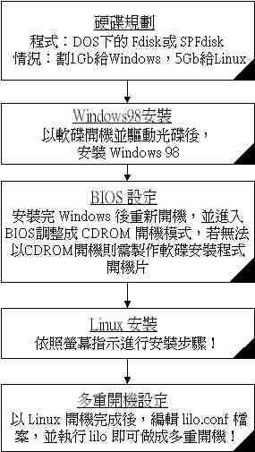
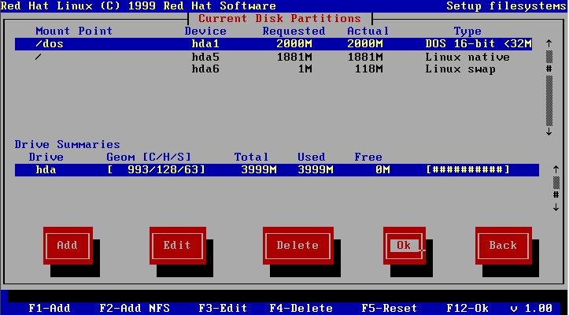
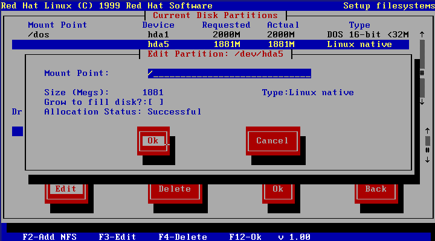

- 在安装 Linux 之前，先了解一下你为何要安装 Linux 呢？ Linux 是什么？ 要如何学习 Linux 呢？
- 另外，你要了解一下，哪一种硬件可以适合 Linux 的安装？你要安装哪一种版本的 Linux 呢？ 最主要的，你安装的 Linux 目的是啥？
- 在进行 Linux 的安装之前，必须先知道到一下你的硬件配备与所需要的操作系统。以下我的示范是以 Windows98 及 Linux (RedHat 6.1) 为基准，建立一个多重引导在 6GB 的硬盘上！
- 再确认一次，我们使用的 Linux 版本是 RedHat 6.1，核心为 2.2.12-20 的稳定版本，以可开机光盘进行文本模式的安装。
- 当然啰，再提一下鸟哥的硬件配备：Pentun-166MMX, 64MB RAM, 6GB Harddisk, S3 Virge VGA, RTL 8139 Netcard, 20X CD-ROM ...
- 由于我需要进行多重引导的设定，然而 Linux 本身的强悍功能可能会让你的 Windows 没有办法在安装了 Linux 后还能顺利安装完毕，所以这里要说的是：『请先安装了 Windows98 之后再安装 Linux！』，否则等你安装完了 Linux 之后，要再安装 Windows 可能要花上好一番功夫啰！安装流程如下图所示：

鸟哥的硬盘规划为： 1GB windows98 + 5GB Linux ，多重引导选单！先假设你对于硬件的了解还算可以（亦即你可以自己将旧的零件组装成一台新的计算机！），在你将所有的零件组合好之后，就要开始进行你这部主机的操作系统规划了。由于各软硬件厂商所开发的驱动程序毕竟还是以微软的 Windows 系统为主流，而你要确定你的系统有没有问题时，通常也是使用 Windows 的即插即用的功能去捉你的硬件。也曾在网络上听说过，当你的 Linux 硬件配置有问题时，可以在 Windows 中察看其 IRQ 与 DMA 等硬件配置，然后再回到 Linux 中去设定！
另外，再假设你还有其他的小弟小妹可能会来碰你的计算机，你又想将这部计算机在不跑 Linux 时还可以当小弟小妹的打字练习机，或上网浏览器使用.....。这样一来，是否觉得这部计算机有多重系统的设定需要呢？我就觉得有需要！所以在我的主机上我是设计成 Windows98 与 Linux 共存的情况！同时，若仅使用 Windows 作为 Web server 的主机也是有很多的程序可用的！在后面的章节中我也会以 Windows 98 做为主机的情况略做说明！
假设你的旧机子上已经存在旧有的数据，那样一来你势必要重新规划你的硬盘，以符合你要灌的系统需求！这里我是将我的 6GB 硬盘规划为两个扇区，一个是 1GB 给 Windows 使用，一个是 5GB 给 Linux 使用。咦！ Linux 不是不会用到很多的资源吗？为何要划分 5GB 给 Linux 使用呢？通常你灌完 Linux 全部的系统需求大约需要 1.2GB ，但是因为我还有设定 『代理服务器』 的服务，这项服务会很耗硬盘空间，所以开的系统是比较大一些的，而且，还有一些预留空间是给『信件』及『网页空间』与『网络驱动器』使用的空间！此外，这部机器上主要是提供 Linux 主机之用，当然 Windows 的空间就不用太大啦！
注：如果你有的只是1～2GB的小硬盘，那基本上你可以仅安装 Linux 即可！那样的话，占用的硬盘空间会变的很小！（只要 1GB 即可）
好了，接下来就是使用 DOS 下的 FDisk 程序或是国人开发的 SPFdisk 程序进行硬盘的分割了！这里假设你已经会使用 DOS 或是 SPFdisk 的程序进行硬盘分割，所以将硬盘分出主分割区 1GB 及未分割区为 5GB ，在这一个部分只有一个地方需要注意，『若您的硬盘很大（例如现在的 30GB 硬盘），由于开机系统区并不支持在 1023 扇区以外的硬盘扇区，所以在分割的时候要先注意一下你要将系统启动扇区放置的区域是哪一个！！！』
Fdisk 的范例：若您还不会使用 fdisk 的功能，可以按这里看一个范例（使用 1.2GB 的硬盘作为范例分割成两个主要分割区）。
好啦！硬盘终于分割好啦，那接下来要做的就是灌 Windows98 啦！说实在的，玩个人计算机的朋友们， Windows98 不灌个几十遍以上是不可能的，因为 Windows98 有个别名叫做『晕倒九八』，就是要灌到晕倒 98 次以上才会成精！哈哈！当然这是个笑话，不过这个笑话里隐藏了一个很大的问题，就是 Windows98 或 Windows ME 的不稳定性。当然了，如果你对于 Windows2000 或 Windows NT 有兴趣的话，那你可能会说『微软出的东西不错呀！』就连玩硬件的玩家都知道的『汤姆的五金店』对于微软这款 Windows2000 都赞誉有加，不过汤姆的五金店中也说了，微软根本不希望 Windows2000 可以卖的好，因为如此一来使用 Windows 的客户将不想要再继续升级其操作系统，因为 Win2000 实在是太稳定了，那微软赚啥？？？这或许是上述这个网站对于微软过去行为的不谅解，不过也可以说明在个人计算机上使用的 98 核心的不稳定性了！说到这里实在是有点离题，好，回归主题！ Windows98 在 1GB 的硬盘空间要灌到怎样的地步呢？其实只要能开机就可以了！因为后续的安装可以在你 Linux 系统装完之后再继续安装，因为 Linux 安装完毕之后，你的这部机器就可以使用多重引导了，当然 Windows 既然可以开机当然也可以继续他未完成的安装啦！
话虽如此，不过最好还是能把一些常用的执行程序也一起灌好，尤其是网络卡的安装与联机程序的安装！因为这一台 PC 是要被当成主机使用的，不用说，其因特网的连接一定是主要的功能，所以当然你要先确认在比较容易以图形接口安装的 Windows 接口下，即插即用的配备均可正常运作！而以拨接网络或 ADSL 拨接或固定制网络系统或校园网络系统.....不管何种连接上网络的系统，你要先确认所有的运作是正常的！这样就可以了！
安装 Windows98 的过程我就不多说了，主要是先以 98 制作的开机片开机并驱动光驱，放入原版的 98 光盘后打入
C:>setup /is （如果你已经格式化好硬盘了） /is 这个参数是令 Windows 不要去检查硬盘的指令。然后就按照屏幕上的指示一步一步的安装吧，照你机器的速度，安装大约需要30分钟以上的时间，泡个茶去看个电视再回来吧！
简易流程
1. 确认 BIOS 是否支持光盘开机；
2. 以文本模式开始安装 Linux；
3. 安装流程；
基本上如果是不太旧的版子都会支持光盘开机的，使用 CD-ROM 开机的好处是比较快，而且也不用再去做 Linux 安装开机片，确认的方法如下：2. 以文本模式开始安装 Linux：
- 按电源键开机；
- 在进入系统之前会出现 Del 字样（每个厂牌不太相同），此时按下键盘上的 Delete 键；
- 进入 BIOS 之后以箭头键选择 『BIOS Features Setup』 这一项，或者是 『Advanced BIOS Features』 ，不管如何，反正只要看到 『BIOS Features』 字样的那一项就对了！；
- 将箭头键移动至 『Boot Sequence』 或者是 『First Boot Device』； 这一项，按键盘上的 『Page Up』 或 『Page Down』 按键，选择 『CD-ROM』 为第一开机顺位即可。这里注意一下，如果你的机器并不支持 CD-ROM 开机的话，你一定找不到 CD-ROM 这一项，这时请制作开机片吧，并将此项调整为 『A』 为第一顺位；
- 按键盘上 『ESC』 键退出；
- 将箭头键移动至 『Save and Exit』 这一项按 『Enter』 及 『Y』 确认后重新启动即可！
Linux 的安装一定要使用 Linux 安装程序开机片，或者是由 CD-ROM 直接以 Linux 光盘开机，方法为：3. 安装流程：OK！在完成上面的步骤之后（不论是何种开机方法），将可开机 Linux 光盘放入你主机的光驱中，将可开机软盘放入软盘驱动器中，按下电源键开机，开机完成之后会进入安装启始画面，此时请在提示字符下打 text 然后按 Enter ，便可进入文本模式安装 Linux 了！
- BIOS可使用 CD-ROM 开机：若是你可以 BIOS 开机，则按照『步骤一』设定开机为 CD-ROM ，然后在开机之前放入 Linux 可开机光盘即可自动开机；
- 仅能使用软盘开机：若你的主机无法以 CD-ROM 开机，则你需要在 DOS 接口中制作 Linux 开机片：
a. 随便找一台 Windows 计算机，开启 MS-DOS 窗口；
b. 将可开机 Linux 光盘放入光驱中，在 MS-DOS 窗口键入：
C:\WINDOWS> cd E:\dosutils 上面的 E 为你的光驱代号；
c. 在 DOS 提示字符下键入：
E:\dosutils> rawrite -f e:\images\boot.img -d a: 上面的 e 为你的光驱代号，这时在软盘驱动器放入一片空白的软盘片后，按 『Enter』 即可。
个人是比较偏好文本模式的安装，因为图形接口的安装虽然方便，但是好像常常会有问题，而且当你的主机速度并不快时，图形接口的安装会有一点点的慢， 所以我是建议使用文本模式啦，以下也以文本模式作为介绍。不过，如果使用图形接口也是可以的，安装的顺序都相同，只是以图形的方式呈现罢了！
|
|
|
|
|
|
|
|
|
|
|
|
|
|
|
图一 
建立虚拟内存=> 在图一中你可以按键盘的 『Tab』 键选择至 『Add』 这一项按 Enter，会出现一个如下所示的窗口（图二），『Mount Point』不用理他，按 『Tab』 移动至 『Size (Megs)』 这一个选项后，输入 『100』 （我们要建立100MB的虚拟内存），然后再按 『Tab』键移动至画面中的 Type 这一项，选择『Linux Swap』这一项（Linux Swap 即是 Linux 下的虚拟内存了），然后再按 Tab 键至『OK』按 Enter 即可；
图二 
建立根目录=====> 在图一的画面中再次移动至 『Add』 这一项，出现图二的画面后，在 『Mount Point』 输入 『/』，然后在 『Grow to fill disk?:』 按一次空格键使括号内出现一个 [*] 符号，这是说『将所有剩下的硬盘空间都配置给根目录』的意思（当然了，如果你不要将所有的空间都分配给 Linux 的话，在 Size 的地方输入你要给 Linux 的磁盘空间，单位为 MB ，最少要给 2048MB 的空间喔！）。而在 Type 的地方选择 『Linux Native』 这一项（Linux Native 就是 Linux 的扇区），再按 『OK』 即可！
贮存变更区域===> 刚刚的变动都做完之后，你应该可以看到原先图一的画面上多出了两列，就是刚刚分割的那两列，而且最底下的那一列有个
free
项目的那一栏应该会显示为 0，然后选择『OK』这个项目，会出现要你
Save
磁盘分区的讯息，按 『Yes』 即可。
| LILO boot: |
的提示字符之后，马上按 『Tab』键，则会出现两个开机系统，分别是『linux』与『dos』，如果要进入 Windows98 系统，请在 boot: 后面输入 dos 即可，如果要进入 linux 则输入 linux 即可。当然了，如果你不按任何键，则系统会主动以 Linux 开机！这个多重引导的部分我们会在后面继续谈到！
2002/01/01以来统计人数
- Q：在灌过了 Linux 之后，由于安装 Lilo 开机区在 MBR 中，所以虽然 Linux 被移除了，但是开机还是会以 MBR 的设定为主，因此，很多人灌完了 Linux 想改回 Windows 时，硬盘总是还会以 Linux 开机。请问要如何将 Lilo 自 MBR 中移除？
A：
你可以使用 Windows98 的软盘开机后，输入：如此则可将 MBR 中的 Lilo 完全移除了！
A:\> fdisk /mbr (fdisk 是 DOS 下的指令)
- Q：何谓『虚拟 IP 』，与『实体 IP 』或者『固定 IP 』『动态 IP 』有啥不同？
A：
『实体 IP 』：在网络的世界里，为了要辨识每一部计算机的位置，因此有了计算机 IP 地址的定义。一个 IP 就好似一个门牌！例如，你要去微软的网站的话，就要去『 207.46.197.101 』这个 IP 位置！这些可以直接在因特网上沟通的 IP 就被称为『实体 IP 』了。『虚拟 IP 』：不过，众所皆知的，IP 地址仅为 xxx.xxx.xxx.xxx 的数据型态，其中， xxx 为 1-255 间的整数，由于近来计算机的成长速度太快，实体的 IP 已经有点不足了，好在早在规划 IP 时就已经预留了三个网段的 IP 做为内部网域的虚拟 IP 之用。这三个预留的 IP 分别为：
10.0.0.0 - 10.255.255.255
不过，由于是虚拟 IP ，所以当您使用这些地址的时候﹐当然是有所限制的，限制如下：
172.16.0.0 - 172.31.255.255
192.168.0.0 - 192.168.255.255私有地址的路由信息不能对外散播
这给我们架设IP网络做成很大的方便﹐比如﹕即使您目前的公司还没有连上Internet﹐但不保证将来不 会啊。如果使用公共IP的话﹐如果没经过注册﹐等到以后真正要连上网络的时候﹐就很可能和别人冲突了。也正如前面所分析的﹐到时候再重新规划IP的话﹐将 是件非常头痛的问题。这时候﹐我们可以先利用私有地址来架设网络﹐等到真要连上intetnet的时候﹐我们可以使用IP转换协议﹐如NAT (Network Addresss Translation)等技术﹐配合新注册的IP就可以了。
使用私有地址作为来源或目的地址的封包﹐不能透过Internet来转送
关于私有地址的参考纪录(如DNS)﹐只能限于内部网络使用『固定 IP 』与『动态 IP 』：基本上，这两个东西是由于近来网络公司大量的成长下的产物，例如，你如果向中华电信申请一个商业型态的 ADSL 专线，那他会给你一个固定的实体 IP ，这个实体 IP 就被称为『固定 IP 』了。而若你是申请计时制的 ADSL ，那由于你的 IP 可能是由数十人共同使用，因此你每次重新启动上网时，你这部计算机的 IP 都不会是固定的！于是就被称为『动态 IP』或者是『浮动式IP』。基本上，这两个都是『实体IP』，只是网络公司用来分配给用户的方法不同而产生不同的名称而已！
这里只有说了一些概念性的东西，基本是，IP是很麻烦的，小弟也不甚了解，例如子网掩码的计算等等！强烈的建议初学者到 study-area 这个网站去看看，相信对你往后的计算机网络概念有很大的帮助喔！
- Q：什么是 Linux 的核心，核心有哪些版本？哪里可以取得最新的核心程序？
A：
所谓的核心可以简单的想成是 Linux 的心脏，核心包含了你的系统所需要的硬件配置与 Linux 系统模块，核心是相当重要的一个咚咚，当你的硬件太新，而使你原来的 Linux 捉不到时，就可以借着跟新核心程序来捉到！基本上，目前可以听到的核心大概有 2.2.X 、 2.3.X 及 2.4.X，要注意的是，这些版本是同时发展的，只是目的不同，所以 2.3.X 并不是指比 2.2.X 来的新，这点一定要注意。通常，2.2.X与2.4.X是较为稳定的版本，至于 2.3.X 则是适用于一些程序发展者所需要的特殊核心，因此，对于我们这种初学者来说，使用 2.2.X 的核心版本就可以了！
在各大 FTP 站上均可以捉到最新的核心程序，只是，除非你很确定你要的新核心作用为何，否则小弟并不是十分建议常常更新核心的啦！毕竟，计算机够用且适用就好！
- Q：在灌完了 Linux 之后，想改回来 Windows，但是以 DOS 的 Fdisk 却无法分割这个硬盘，该如何是好？
A：
由于 Windows98 开机片的系统并不认识 Linux 的档案配置区，所以使用 DOS 下的 Fdisk 是无法修正硬盘的数据的！你有两个方法可以将这一个硬盘回复，一个是再以 Linux 系统重新划分；另一个则是使用国人发展的 Spfdisk 来划分，这里有一个 spfdisk 的范例可以让你看看如何划分硬盘。
- 等待加入新问题